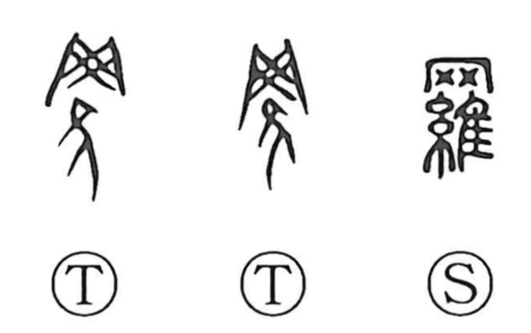

羅

Kun: ami | On: ra
net ・ to net ・ thin silk ・ figured silk ・ crepe ・ to arrange ・ enumeration
Explanation
This character is built by combining the graph for a net, 网, with 維. In oracle-bone and bronze forms, the net is shown cast over a bird, and with the later addition of the silk radical 糸 the graph comes to depict both casting a net and securing what is caught. From this it means “net” and “to net.” Because the mesh evokes fine, translucent textiles, the word broadened to denote thin silk, patterned silk, and crepe. By analogy with laying out a mesh, it also came to mean arranging or lining things up, as in 羅列. Related characters inherit the same image: 邏 for patrolling—moving around like the interlinking mesh—and 罹 for being ensnared and thus afflicted.